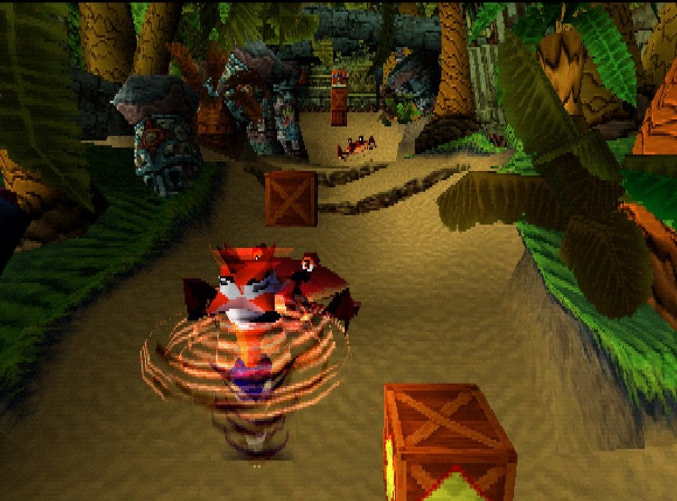

A franquia Crash Bandicoot é uma série de jogos de plataforma que foi lançada pela primeira vez em 1996. O jogo original foi desenvolvido pela Naughty Dog e publicado pela Sony Computer Entertainment. Desde então, a franquia tem sido desenvolvida e publicada por diferentes empresas ao longo dos anos.
Até o momento, a franquia Crash Bandicoot possui 11 jogos principais, incluindo remasterizações e relançamentos. Além disso, há também jogos spin-offs e colaborações com outras franquias, como Crash Team Racing Nitro-Fueled.
A lore de Crash Bandicoot gira em torno do protagonista Crash Bandicoot, um marsupial evoluído geneticamente que luta contra as forças do mal para salvar sua namorada, sua irmã e as Ilhas Wumpa.
O principal antagonista da série é o cientista maligno Dr. Neo Cortex, que está sempre buscando dominar o mundo usando suas criações mutantes.
Crash Bandicoot: O herói principal, um marsupial corajoso e destemido que luta contra as forças do mal.
Dr. Neo Cortex: O principal vilão da série, um cientista louco que deseja conquistar o mundo.
Coco Bandicoot: A irmã de Crash, uma hacker inteligente e corajosa que o auxilia em suas aventuras.
Os jogos da franquia Crash Bandicoot são conhecidos por sua jogabilidade de plataforma, com níveis repletos de obstáculos, inimigos e quebra-cabeças. Os jogos também apresentam elementos de ação, onde Crash pode girar, pular, deslizar e atacar inimigos. Além disso, a série é famosa por seus gráficos coloridos, trilha sonora cativante e senso de humor único.
Além dos jogos originais, a franquia Crash Bandicoot teve adaptações para outras plataformas, incluindo jogos lançados para Game Boy Advance, Nintendo DS e smartphones. Crash Bandicoot também fez aparições em outros jogos, como Skylanders Imaginators e Spyro Reignited Trilogy.
A franquia Crash Bandicoot foi inicialmente desenvolvida como uma resposta à popularidade dos jogos de plataforma da época, como Super Mario 64.
O jogo original foi planejado para ser um jogo de corrida de karts, mas acabou se tornando um jogo de plataforma devido a limitações técnicas.
Crash Bandicoot se tornou um dos mascotes mais reconhecíveis da era do PlayStation e um ícone da cultura pop dos anos 90.
Ricardo Desenvolvimentus™ 2023. Todos os direitos no seu rabo.